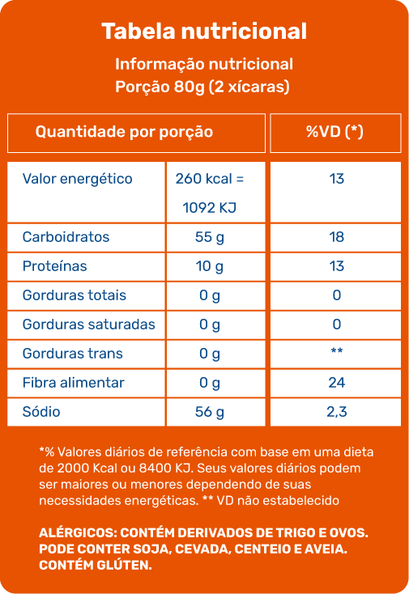

Educadores

Cenário do mundo e do Brasil, fatores da obesidade infantil
Uma das epidemias do século XXI, a obesidade infantil é atribuída a fatores políticos, econômicos, sociais e culturais. No vídeo a seguir, conheça mais sobre esse problema, que atinge uma expressiva parcela mundial e é um dos desafios da saúde pública.
Clique ou toque para assistir ao vídeo.
Tipos de alimento e alimentação atual, alimentação saudável (do campo à mesa), prevenção e tratamento
No vídeo a seguir, veja quais são os hábitos essenciais para uma vida saudável e como transformar sua alimentação e prevenir a obesidade infantil.
Clique ou toque para assistir ao vídeo.
Rótulos dos alimentos e dicas extras
Confira, no vídeo a seguir, quais são os elementos essenciais na comunicação entre produto e consumidor. Faça boas escolhas e tenha uma alimentação saudável.
Clique ou toque para assistir ao vídeo.
Entendendo os rótulos na prática
Na tabela nutricional a seguir, você encontrará informações referentes à composição nutricional dos produtos. Toque ou passe o mouse em cada elemento para saber mais sobre ele:
Na tabela nutricional a seguir, você encontrará informações referentes à composição nutricional dos produtos. Em seguida, toque em cada elemento para saber mais sobre ele:
Os valores descritos em cada item da tabela nutricional (carboidrato, proteína, gorduras etc.) são referentes à porção descrita na tabela e não se referem à composição total do alimento.
Os valores descritos em cada item da tabela nutricional (carboidrato, proteína, gorduras etc.) são referentes à porção descrita na tabela e não se referem à composição total do alimento.
Valor energético
É a energia produzida pelo nosso corpo, proveniente dos carboidratos, das proteínas e das gorduras totais. Na rotulagem nutricional, o valor energético é expresso em forma de quilocalorias (kcal) e quilojoules (kJ).
Obs.: quilojoule (kJ) é outra forma de medir o valor energético dos alimentos, sendo que 1 kcal equivale a 4,2 kJ.
Carboidratos
São os componentes dos alimentos cuja principal função é fornecer a energia para as células do corpo. Os carboidratos são encontrados em maior quantidade em massas, arroz, açúcar, mel, pães, farinhas, tubérculos (como batata, mandioca e inhame) e doces em geral.
Na legislação em vigência, ainda não é obrigatória a informação sobre o açúcar na rotulagem, sendo ele incluído como carboidrato. É preciso buscar essa informação na lista de ingredientes, na qual o açúcar pode ser mencionado com outros nomes, como glucose de milho, glicose, xarope de malte, frutose, sacarose, maltodextrina, dextrose, néctares, xarope de milho.
Proteínas
São componentes dos alimentos, necessários para construção e manutenção de órgãos, tecidos e células do corpo. As proteínas são encontradas em carnes, ovos, leites e derivados e também nas leguminosas (como feijões, soja e ervilha).
Gorduras totais
São as principais fontes de energia do corpo e ajudam na absorção das vitaminas A, D, E K. As gorduras totais referem-se à soma de todos os tipos de gorduras encontradas em um alimento que seja tanto de origem animal quanto de origem vegetal.
Gordura saturada
É um tipo de gordura presente em alimentos de origem animal (carnes, toucinho, pele de frango, queijos, leite integral, manteiga, requeijão, iogurte). O consumo desse tipo de gordura deve ser moderado, pois, se consumido em grandes quantidades, pode aumentar o risco de desenvolvimento de doenças do coração.
Gordura trans
Gordura trans ou ácido graxo trans são um tipo de gordura que pode estar naturalmente presente em alimentos de origem animal ou ser produzida industrialmente por meio de processos tecnológicos, a fim de conferir maior crocância e sabor e aumentar o tempo das condições de consumo de determinados produtos. Esse tipo de gordura é normalmente encontrado em alimentos ultraprocessados e, quando consumido em grande quantidade, pode aumentar o risco de desenvolvimento de doenças do coração. A informação sobre a quantidade de gordura trans nos alimentos é obrigatória no Brasil. Entretanto, se a quantidade presente no alimento for igual ou inferior a 0,2 gramas por porção do alimento, ela pode ser declarada como zero na tabela nutricional. Atualmente, a Organização Mundial de Saúde (OMS) recomenda que o consumo diário de gordura trans não ultrapasse 1% do valor energético total de uma dieta, o que representaria um valor que não excedesse 2 gramas por dia em uma dieta de 2.000 calorias.
Fibras alimentares
São partes dos alimentos que resistem à digestão e reduzem o tempo que o alimento leva para ser digerido e eliminado. As fibras alimentares são benéficas para a função intestinal, previnem a constipação, favorecem a absorção de alguns nutrientes e são fatores de proteção contra algumas doenças.
Sódio
É o principal constituinte do sal de cozinha e está muito presente em alimentos industrializados. Ele deve ser consumido com moderação, já que o seu consumo em excesso pode resultar em aumento da pressão arterial. Segundo o Ministério da Saúde, se a quantidade de sódio for maior do que 400 mg em 100 g do alimento, este será considerado um alimento rico em sódio, sendo prejudicial à saúde e, portanto, devendo ser evitado.
Porção
É a quantidade média do alimento que deve ser usualmente consumida por pessoas sadias, promovendo a alimentação saudável.
Percentual de valores diários (%VD)
É um número em percentual que indica quanto o produto em questão apresenta de energia e nutrientes em relação a uma dieta 2.000 calorias.
Medida caseira
Indica a medida normalmente utilizada pelo consumidor para medir alimentos, por exemplo: fatias, unidades, pote, xícaras, copos, colheres de sopa. A apresentação da medida caseira é obrigatória, ajudando a entender melhor as informações nutricionais.
Os valores descritos em cada item da tabela nutricional (carboidrato, proteína, gorduras etc.) são referentes à porção descrita na tabela e não se referem à composição total do alimento.
Compra, armazenamento e manipulação segura dos alimentos
Acompanhe, neste vídeo, algumas dicas de como tornar no dia a dia o seu alimento mais durável, fresco e seguro.
Clique ou toque para assistir ao vídeo.
Comensalidade, dimensões do ato de comer e dicas finais para um crescimento saudável
Alimentação é interação social. Conheça no vídeo a seguir as dimensões do ato de comer e como elas são essenciais para o nosso desenvolvimento.
Clique ou toque para assistir ao vídeo.
Material complementar
Preparamos dois e-books para auxiliá-lo em suas aulas. Se preferir, você também poderá fazer o download de cada um deles.
Referências:
https://bvsms.saude.gov.br/bvs/publicacoes/guia_alimentar
_populacao_brasileira_2ed.pdf